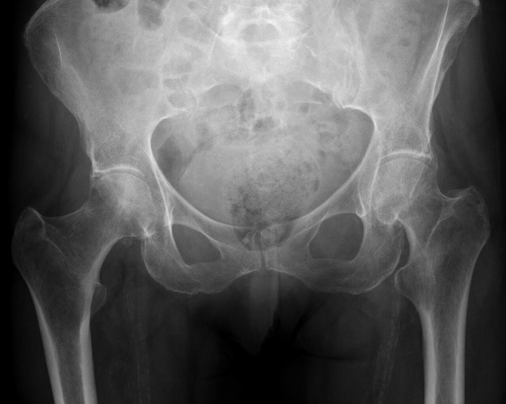

Ficha del catálogo
Fractura de cadera (cuello femoral y pertrocantérea)
- Sistema
- Óseo
- Modalidad
- RX
- Región
- Cadera
- Dificultad
- Básico
Es la lesión osteoporótica de mayor impacto sanitario en el anciano y suele producirse por una caída de baja energía. Se dividen en intracapsulares, que comprometen la vascularización de la cabeza femoral, y extracapsulares o pertrocantéreas, que consolidan mejor pero sangran más. El tipo determina si se opta por osteosíntesis o por prótesis.
Técnica
Anteroposterior de pelvis que incluya ambas caderas para comparar, más una proyección axial o lateral de la cadera afectada. La comparación con el lado sano es la herramienta más útil.
Qué observar
- Interrupción de las líneas trabeculares principales del cuello femoral
- Angulación en varo y acortamiento del miembro con rotación externa
- Ruptura de la línea cervicocefálica continua en el borde inferior del cuello
- Trazo entre ambos trocánteres en las fracturas pertrocantéreas, a menudo conminuto
- Asimetría en la posición del trocánter menor por la rotación del miembro
- Signos indirectos de fractura oculta: Engrosamiento trabecular o esclerosis lineal
Hallazgos
Solución de continuidad en el cuello femoral o en la región trocantérea, con angulación en varo, acortamiento y pérdida de la alineación trabecular normal.
Perlas
Ante un anciano que no puede apoyar tras una caída y con radiografía normal, hay que descartar fractura oculta con resonancia o tomografía. La resonancia muestra edema medular desde el primer día y evita altas equivocadas.
Diagnóstico diferencial
- Fractura de rama pubiana
- El trazo está en el anillo pélvico anterior y la cadera conserva su morfología.
- Coxartrosis descompensada
- Hay pinzamiento y osteofitos crónicos sin trazo agudo.
- Metástasis con fractura patológica
- Existe lesión lítica previa y el trauma es mínimo o inexistente.
Simuladores
- Superposición de gases intestinales sobre el cuello
- Líneas de Mach por el borde acetabular
- Pliegues cutáneos en pacientes obesos
Por modalidad
- RX
- Diagnóstico inicial y planificación quirúrgica
- TC
- Detecta trazos ocultos y define la conminución
- RM
- Máxima sensibilidad para fractura oculta y para necrosis posterior
Protocolo
Anteroposterior de pelvis con rotación interna de 15 grados de los pies si el dolor lo permite, más axial de cadera. Estudio seccional cuando persiste la sospecha clínica.
Clasificación
La distinción básica es intracapsular frente a extracapsular. Las intracapsulares desplazadas tienen alto riesgo de necrosis avascular y suelen tratarse con prótesis.
Errores frecuentes
- Descartar fractura con una sola proyección de baja calidad
- No comparar con la cadera contralateral
- Pasar por alto una fractura patológica sobre lesión lítica preexistente

cadera cuello femoral pertrocanterea osteoporosis anciano fractura oculta caida